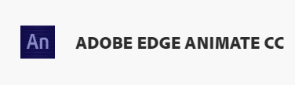
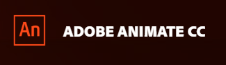
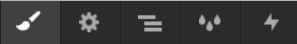
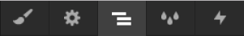
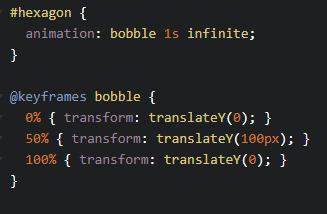

To Do Today:
-
Webflow
Recognize the main user interface components and their purposes
-
Timeline
Animate elements based on Webflow's timeline
-
Detect Scrolling
How to detect scrolling using vanilla JS?
WYSIWYG / GUI based platforms
- 
- 
Webflow.com
-
Styles
This is where you can adjust any CSS property, notably transforms and transitions.
-
Navigator
This is where you can view the HTML structure. Use this when you want to insert a new HTML element with greater precision rather than dragging a new element onto the page
-
Interactions
Insert animations based on a trigger
2D
(remember this Week 3 slide?)
transform: scale();
transform: skew();
transform: translate();
transform: rotate();
- 1. Add a transform move and skew upon clicking an image within Webflow
- 2. Add a transform rotate and scale upon hovering over a button
- 3. Add an opacity change as well
(remember this week 4 slide?)
transition: color 2s ease-in 0.5s;
Implement the above transition on the button in Webflow
@keyframes animation
(remember this Week 5 slide?)
Lab 12 (30 mins)
Complete the following:
Submit Lab 12 + Break
(5 mins) + (25mins)
* * *
More Stuff
How to detect scrolling in js?
View slide scrolling in action using old way
sliderImages.forEach(sliderImage => {
// half way through the image
const slideInAt = (window.scrollY + window.innerHeight) - sliderImage.height / 2;
// bottom of the image
const imageBottom = sliderImage.offsetTop + sliderImage.height;
const isHalfShown = slideInAt > sliderImage.offsetTop;
const isNotScrolledPast = window.scrollY < imageBottom;
if (isHalfShown && isNotScrolledPast) {
sliderImage.classList.add('active');
} else {
sliderImage.classList.remove('active');
}
});
new IntersectionObserver
const options = { threshold: [0, 0.5, 1.0] } // off, half, and totally on
const callback = (entries, observer) => {
entries.forEach(entry => {
// only using threshold of 1 here
if (entry.isIntersecting && entry.intersectionRatio >= 1) {
entry.target.classList.add('visible'); // css will animate it in
} else {
entry.target.classList.remove('visible');
}
});
}
const observer = new IntersectionObserver(callback, options);
const boxes = document.querySelectorAll('.box');
boxes.forEach(box => observer.observe(box));
3D
perspective
perspective-origin
transform: rotate3d();
Summary:
- We experienced a web animation platform that enabled us to easily build motion-graphics-based interactive components
- Manipulated HTML elements based on a timeline
- We also observed the rather heavy (but standards-based and open) code that these tools produced.
Do in-class Exercise 9
until end of class
* * *